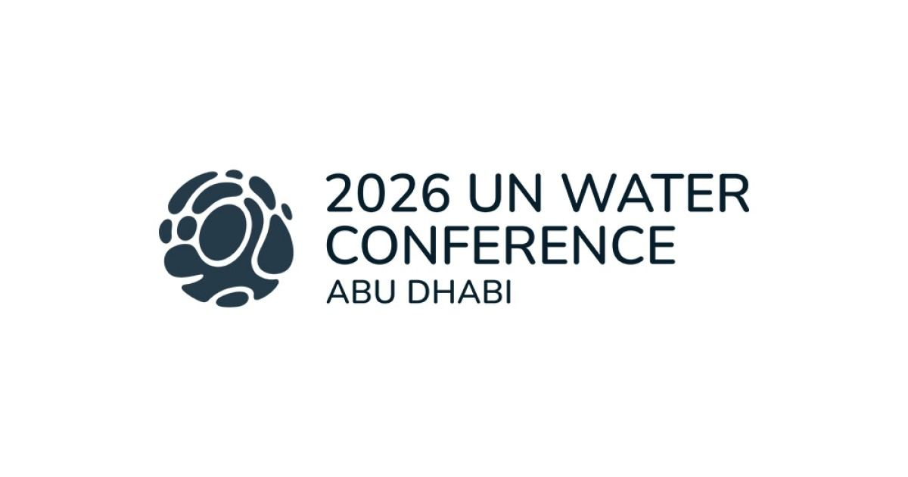

Conferences · Tech
UN Water Conference 2026
- Dates
- –
- Venue
- ADNEC Centre Abu Dhabi
- Location
- Abu Dhabi, United Arab Emirates
- Format
- In-person
- Category
- Tech
- Industry
- Water / Sustainability
- Organiser
- United Nations / Government of the UAE
- Official website
- https://www.adnec.ae/en/eventlisting/un-water-conference
About
UAE dates are local (Gulf Standard Time, UTC+4).
Topics: water, sustainability, policy.
Sources
- Official — https://www.adnec.ae/en/eventlisting/un-water-conference